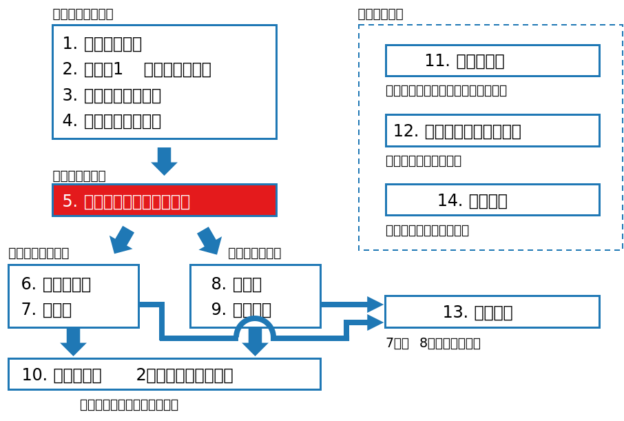
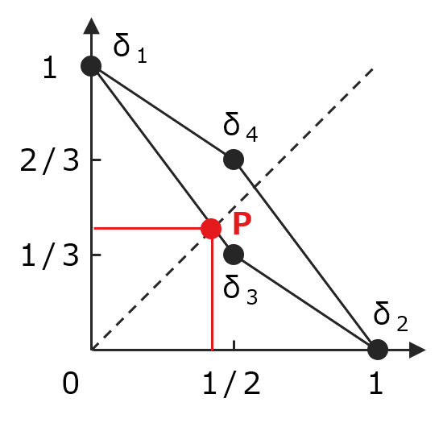

class: middle, center # 数理統計学特論I<br>第5回 統計的決定理論の枠組み 奥 牧人 (和漢研) 2022/05/18 --- # 前回の復習 前回の目的 * 主な統計量と標本分布の意味を数式で理解すること 前回の達成目標 * 標本平均と標本分散の式を書ける。 * $\chi^2$ 分布、$t$ 分布、$F$ 分布の意味を説明できる。 * 大数の法則と中心極限定理の式の意味を説明できる。 * 正規分布近似が使える条件を説明できる。 --- # 今回の位置付け  --- # 今回の目的と達成目標 目的 * 推定と検定を統一的に扱うための理論的枠組みを理解すること 達成目標 * 損失関数の意味を説明できる。 * 決定関数の意味を説明できる。 * リスク関数の意味を説明できる。 * ミニマックス基準の意味を説明できる。 --- # 予習用キーワードの確認 * 平均二乗誤差 * ミニマックス法 --- # Outline 1. 用語と定義 2. 許容性 3. ミニマックス基準とベイズ基準 --- # Outline 1. **用語と定義** 2. 許容性 3. ミニマックス基準とベイズ基準 --- # 用語と定義 (前半) * 標本空間: 標本 $X=(X_1,\ldots,X_n)$ の実現値の属する集合 $\mathscr{X}$ * 母数空間: 母数 $\theta$ の取り得る値の集合 $\Theta$ * 分布族: 分布の集合 $\\{P_\theta\mid\theta\in\Theta\\}$ * 統計家: 未知母数について推定や検定を行う者 * 決定空間: 統計家の決定 $d$ の取り得る値の集合 $D$ * 推定の場合、$d$ は推定値を表し、$D=\Theta$ * 検定の場合、$d$ は棄却または受容を表し、$D=\\{0,1\\}$ --- # 用語と定義 (後半) * **損失関数**: 母数 $\theta$ と決定 $d$ を変数とする非負の関数 $$L(\theta,d)\geq 0$$ * 推定の場合の例: $L(\theta, d)=(\theta-d)^2$ * 検定の場合の例: 決定が正しければ $0$、間違っていたら $1$ * **決定関数**: 標本から決定への写像 $$ d = \delta(X)$$ * **リスク関数**: 損失関数の期待値 $$R(\theta,\delta)=E[L(\theta,\delta(X))]$$ --- # Outline 1. 用語と定義 2. **許容性** 3. ミニマックス基準とベイズ基準 --- # 許容性 * 2つの決定関数 $\delta_1,\delta_2$ があるとき、全ての $\theta$ について $$R(\theta,\delta_1)\leq R(\theta,\delta_2)$$ なら「$\delta_1$ は $\delta_2$ より良いか同等」といい、$\delta_1 \succeq \delta_2$ と書く。 * 少なくとも1つの $\theta$ で等号が外れていれば $\delta_1 \succ \delta_2$ と書く。 * ある決定関数 $\delta$ に対して、$\delta^\*\succ\delta$ となる $\delta^\*$ が存在しなければ、<br>$\delta$ は **許容的** という。 * 許容的だからといって実用的とは限らない。 * 例) 平均の推定値として、標本によらず常に同じ値を出力する決定関数も許容的である。 * 追加の制約条件を考える場合も多い。詳細は次回以降で扱う。 --- # Outline 1. 用語と定義 2. 許容性 3. **ミニマックス基準とベイズ基準** --- # ミニマックス決定関数 * リスク関数の最大値 (最悪値) $$\bar R(\delta) = \sup_\theta R(\theta,\delta)$$ * ミニマックス決定関数: リスク関数の最大値が最小の決定関数 $$\bar R(\delta^\*)\leq \bar R(\delta),\quad \forall \delta$$ --- # ベイズ決定関数 * ベイズリスク: 母数 $\theta$ の事前分布 $\pi$ で重み付けしたリスク関数の平均 $$r(\pi,\delta)=\int_\Theta R(\theta,\delta)\pi(d\theta)$$ * ベイズ決定関数: ベイズリスクが最小の決定関数 $$r(\pi,\delta^\*)\leq r(\pi,\delta),\quad \forall \delta$$ --- # 具体例: 問題設定 * 表が出る確率が $\theta_0$ または $\theta_1$ のいずれかであることが分かって<br>いるコインを1度だけ投げ、母数を推定する。 * 標本空間 (表が $1$, 裏が $0$): $\mathscr{X}=\\{0,1\\}$ * 母数空間 ($\theta_0<\theta_1$ とする): $\Theta=\\{\theta_0,\theta_1\\}$ * 決定空間: $D=\Theta$ * 損失関数: $L(\theta,\delta)=\left\\{\begin{array}{ll}0,&\mathrm{if}\quad\theta=d\\\\1,&\mathrm{otherwise}\end{array}\right.$ --- # 具体例: 決定関数 * 可能な決定関数は4通り 1. $X$ によらず常に $\theta_0$ を予測 2. $X$ によらず常に $\theta_1$ を予測 3. $X$ が $1$ のとき $\theta_1$, $0$ のとき $\theta_0$ を予測 4. $X$ が $1$ のとき $\theta_0$, $0$ のとき $\theta_1$ を予測 * 式で書くと <div> $$ \delta_1(x)=\theta_0,\quad \delta_2(x)=\theta_1,\quad \delta_3(x)=\theta_x,\quad \delta_4(x)=\theta_{1-x}$$ </div> * さらに、確率的にこれらを切り替える **確率化決定関数** も<br>使って良いとする。 --- # 具体例: リスク関数 リスク関数 $R(\theta,\delta)$ の値は次のようになる。 <table class="table text-center" style="width:80%"> <tr><th></th><th>$\theta=\theta_0$ の場合</th><th>$\theta=\theta_1$ の場合</th></tr> <tr><th>$\delta=\delta_1$ の場合</th><td>$0$</td><td>$1$</td></tr> <tr><th>$\delta-\delta_2$ の場合</th><td>$1$</td><td>$0$</td></tr> <tr><th>$\delta=\delta_3$ の場合</th><td>$\theta_0$</td><td>$1-\theta_1$</td></tr> <tr><th>$\delta=\delta_4$ の場合</th><td>$1-\theta_0$</td><td>$\theta_1$</td></tr> </table> <br> $R(\delta)=(R(\theta_0,\delta),R(\theta_1,\delta))$ を $\delta$ の **リスク点** と呼ぶ。 --- # 具体例: ミニマックス決定関数 * 例えば、$\theta_0=1/2,\ \theta_1=2/3$ の場合、可能な決定関数は下図の<br>四角形の範囲になる。 * ミニマックス決定関数は、斜め45度の線が四角形と最初に当たる点Pに相当 (確率 $6/7$ で $\delta_3$ を用い、確率 $1/7$ で $\delta_1$ を用いる)  --- # まとめ 推定と検定を統一的に扱うための理論的枠組みを説明しました。 1. 用語と定義 <span class="times">!</span> 損失関数の意味を説明できる? <span class="times">!</span> 決定関数の意味を説明できる? <span class="times">!</span> リスク関数の意味を説明できる? 2. 許容性 3. ミニマックス基準とベイズ基準 <span class="times">!</span> ミニマックス基準の意味を説明できる? --- # 小テスト * Moodleで小テストに回答して下さい。 * **期限は今週中** (日曜の23:59まで) とします。 * 繰り返し受験して構いません。最高得点で成績をつけます。 --- # 次回の予習用キーワード * 十分統計量